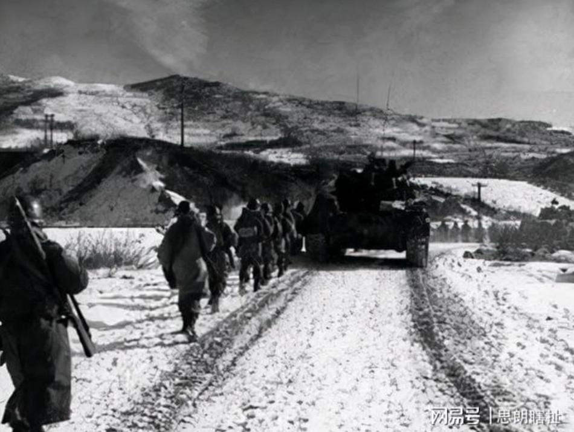
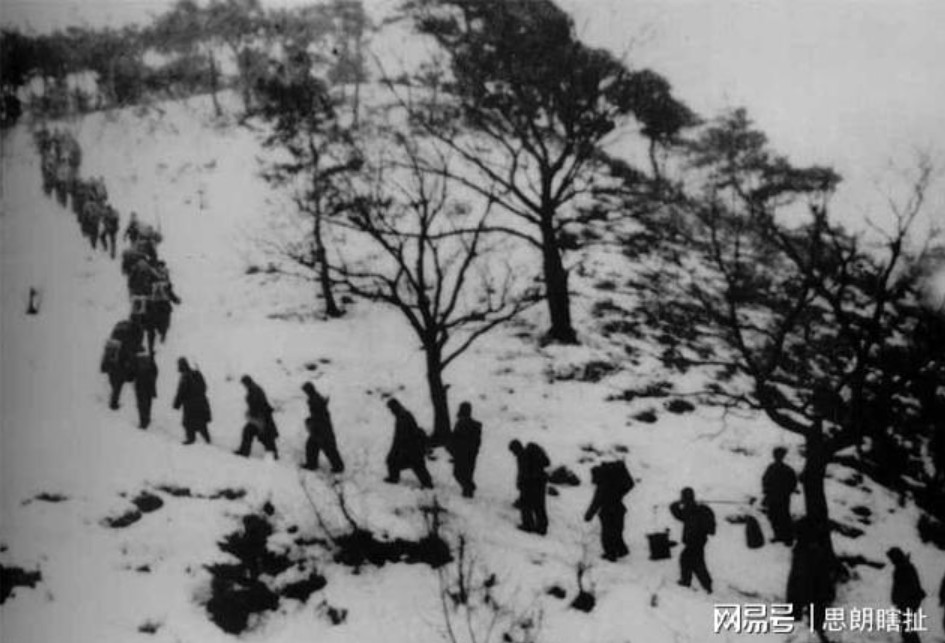
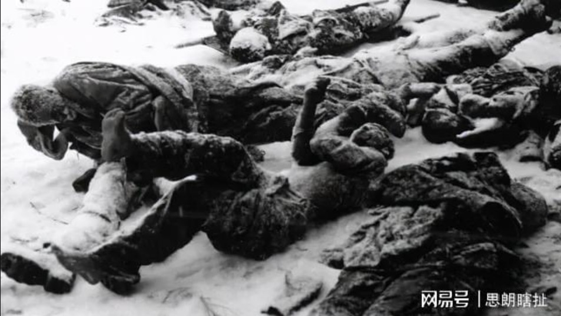
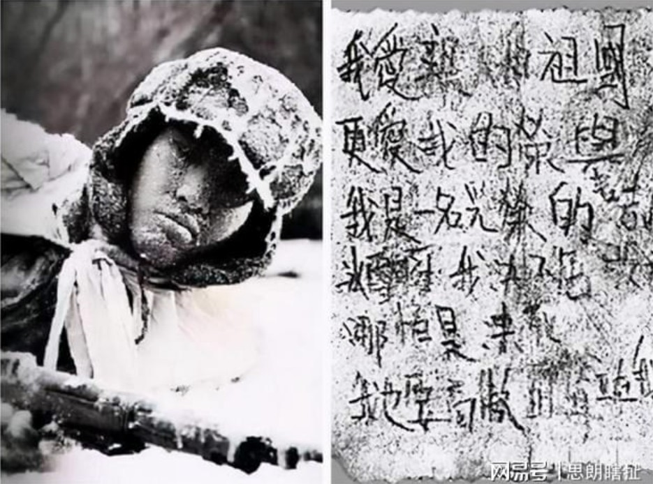
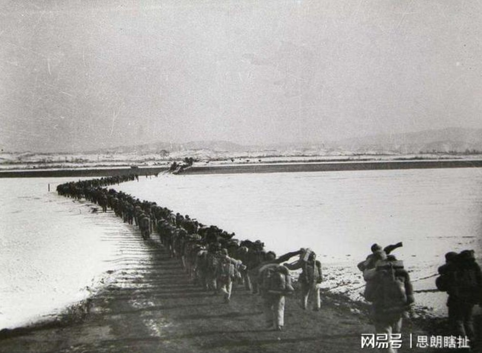

https://www.163.com/dy/article/GJ6OE8FV0545MKQ5.html
这就是中国军人：零下40度潜伏6昼夜，铭记“冰雕连”
2021-09-06 07:17:50 来源: 思朗瞎扯举报
1950年新中国成立的第一个年头，本该好好享受的解放军们，换上新的名字踏上了征程。从那时起这群英勇的将士名叫中国人民志愿军。他们自愿奔赴朝鲜同美国斗争，国际闻名的上甘岭战役更是打出了中国人的志气。只是少有人知道1950年在朝鲜半岛的长津湖地区也有一场战役，这场战役大大地震惊了美军。
更是让当时前往的美军部队，对他们敬了一个标准的军礼。他们是谁？为何能让美军如此佩服？今天我将带你们
目录
一：“一口炒面一口雪”
二：冰雕连
三：替他们记着回家的路

1950年11月那月是刚刚立冬，可是朝鲜半岛的长津湖却格外的冷，不知为何那年长津湖的雪下得非常大。零下四十度的天气，志愿军只有棉袄御寒，饿了吃口炒面，渴了吃口雪。而他们所吃的炒面不过是70%的面粉，掺着30%的高粱或者是玉米粉，再加上0.5%的盐，在锅中混合并炒熟。这便是那时的炒面，一口炒面一口雪”这便是当时志愿军最喜欢的口号。1950年11月组织命令志愿军第九兵团死守长津湖，为了防止敌军过长津湖，我军派一支小分队前往部队前方大约2-300米左右的地方镇守。这支小分队有129人，由三个连组成的。分别是中国人民志愿军第20军59师177团6连，第60师180团2连和第27军80师245团5连，还有一名因受伤掉队的战士和通信员。领了命的他们前往指定地点。前往的路上白雪已经覆盖到大腿处，他们扛着枪迈着坚定步伐前往阵地。看着没过大腿的积雪他们毅然决然地趴在雪地下死死盯着敌军方向，就这样过去了一天又一天，大雪没有停。每次队长命令，全体坐起活动五分钟，他们才从覆盖的积雪下面缓慢坐起，呼一呼冻得僵硬的双手。在那个全世界都不肯相信会有人伏击的地方，中国人民志愿军顶着风雪在那里镇守了几天几夜。哪有什么岁月静好，只是有人负重前行。在那个冰天雪地的地方，美军飞机飞过无数次，侦察兵巡逻无数次。始终都没有发现这129个人。终于有一天队长欣喜若狂地说：将士们，我们接到命令了，明天我们将发起总攻。可是所有的人却没有欣喜，满是沉默。队长知道他们在想什么，他们在这已经呆了许久了，挨饿受冻还吃不饱，但是他们没有怨言，他们怕，怕这是队长为了让他们开心说的，他们当然愿意当战场的奋勇杀敌，扛上枪来这的目的就是如此。

只是等了一天又一天，眼看他们要冻死在这了，可是还是没有攻击的消息。他们宁愿在战场上抛头颅洒热血，也不愿白白冻死在这。后来队长说：将士们这个消息是真的，你看这是组织给我们发的土豆。今天晚上谁都不许闭眼，明天点名必须全员都到。随后队长把那已经冻僵的土豆分发下去，将士们全都放在怀里，以便暖热后明早能吃上几口补充能量。在这期间队长不停地提醒他们不能睡，可是为什么这一夜那么漫长。慢慢地已经听不见队长提醒的声音了，是天快亮了吗？天是亮了，却没有听见冲锋号。也没有队长的声音。随后迎来的是一支美国军队，原本前进的他们突然停止了脚步，因为前方有敌人，疑惑地是他们既没有冲锋也没有开火，于是美国士兵爬上阵地，这才发现这群将士全都没有了呼吸，他们举着枪、握着手榴弹枪口全都对着敌方。
就这样这129名志愿军全都冻成冰雕屹立在长津湖阵地。这让人震惊的景象冲击着美国的士兵，美国指挥官说：如果昨天晚上我们进行突击，躺在这的就是我们了。随后有位士兵发现有一张纸条，便拿交给指挥官。当指挥官打开后，纸上有这么一首诗：我爱亲人和祖国，更爱我的荣誉。我是一名光荣的志愿军战士冰雪啊！我绝不屈服于你，哪怕是冻死，我也要高傲的地耸立在我的阵地上。

面对眼前的场景，面对这样的敌人，美国军队满心的敬佩，随即向他们敬了一个军礼。那129人的冰雕连深深地震撼了美军，不靠一枪一炮让美军对他们心生敬畏。而原以为安全的美国军队继续往前勘察。这时迎来了第二个“冰雕连”，但是这个冰雕连很幸运，因为他们等到了。冲锋号响起，漫天雪地发生震动，志愿军从雪下钻出，顾不得冻得僵硬的身体，奔向敌人而去。哪怕有的将士已经被冰雪冻得骨头坏死，他们也单条腿地跳着往前冲。于是战场就出现了跳着、爬着冲向敌人的场景。如此强势的攻击，让美军震惊。他们被打得措手不及，只得狼狈逃跑。这第二支“冰雕连”是中国人民志愿军第九兵团，他们在这里埋伏了整整6天6夜，不敢睡也不敢动，就怕闭上了眼，明天再也再也听不到自己的名字了。随后有将士打扫战场，看着那支冰雕连队伍，说了一句话：勇士与阵地同在，英雄与日月同辉。为什么我们要铭记历史？因为我们要记着这些英勇的将士们，我们怕他们忘了回家的路。后来我们有幸找到了一位长津湖战役的幸存者—周全弟。他对着镜头敬了一个特殊的军礼，他说：“
我是中国人民志愿军26军77师231团一营二连战士周全弟，向祖国报到！”看着他被截去的四肢，当真让人红了眼眶，他是为了死守阵地四肢皆被冻得坏死才截得四肢。而长津湖战役只持续了17天，便成为万千人民的噩梦。它更是被称为“中美两国都不愿提及的血战”。2021年9月2日我们迎回了滞留在韩国的将士们，为了迎回他们我国使用了最高规格的礼仪，不为别的只为他们值得。我们要做的便是一代代的传承，永远将他们铭记。我们要替他们记着回家的路，只为等有一天他们苏醒，能够知道家在何方。冰雕连的故事已经结束，你有什么想说的，欢迎在评论区留言。
